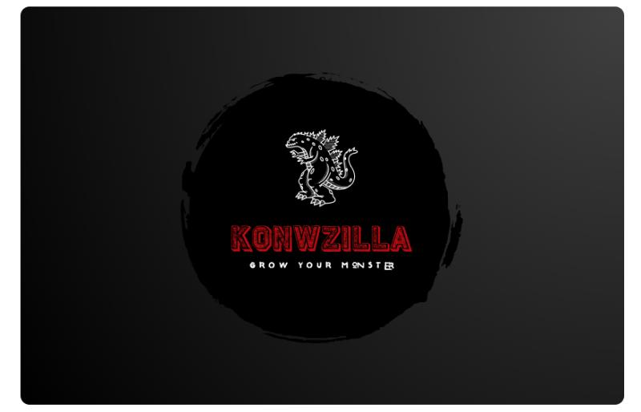
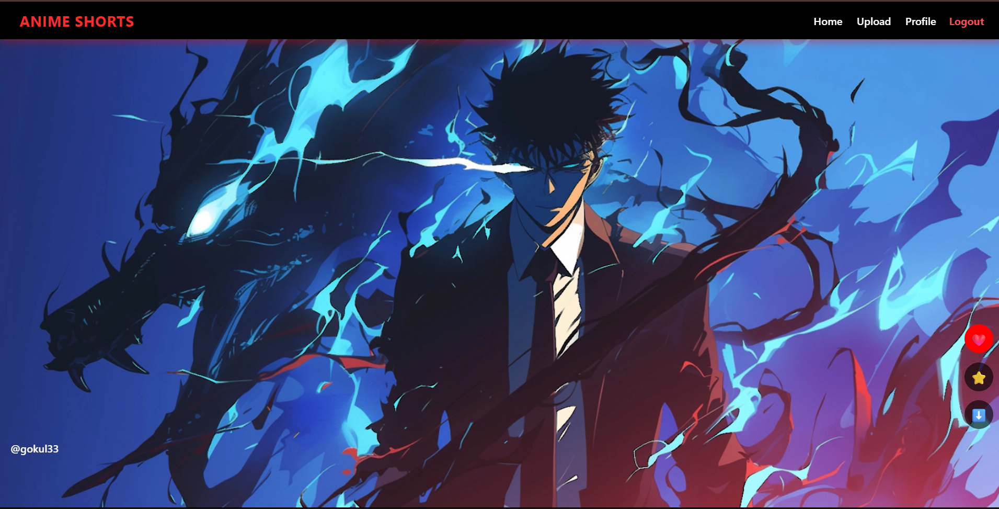
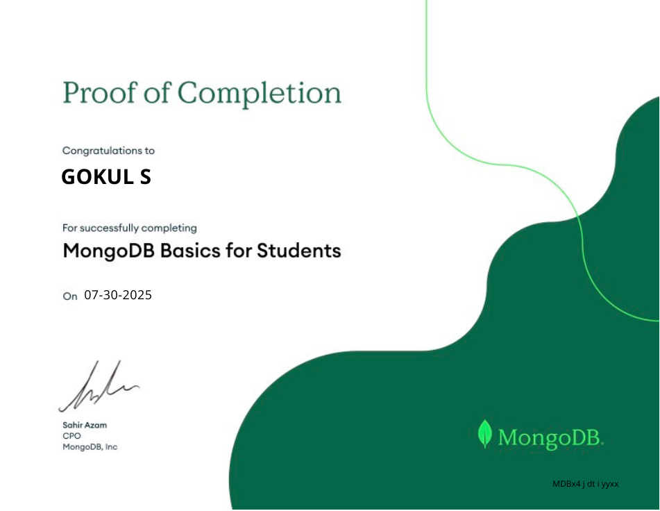
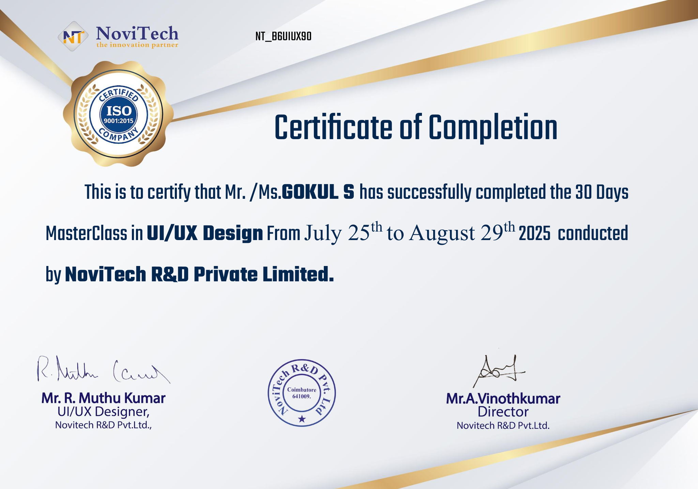
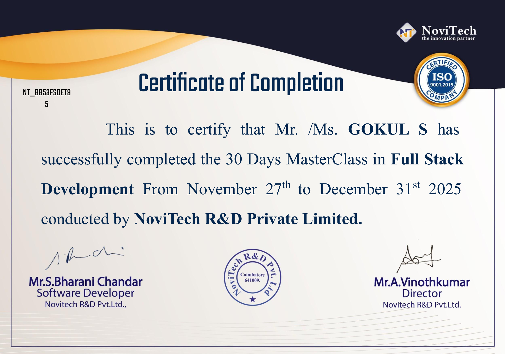
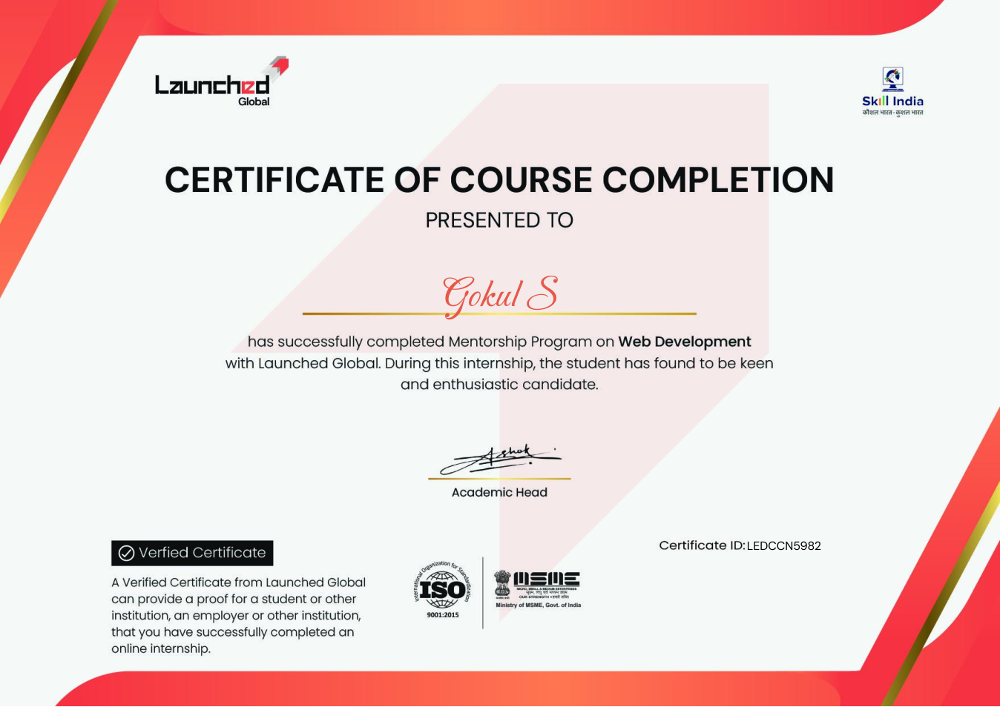
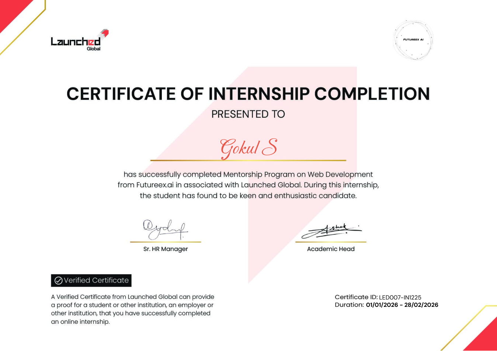

KNOWZILLA — Online Quiz Portal
Full-stack quiz system with authentication, participation flow, and result evaluation.
Academic and hands-on software projects

Full-stack quiz system with authentication, participation flow, and result evaluation.

Full-stack short video platform with reel-style viewing, authentication, uploads, likes, saves, and profile customization.
Java-based endless runner themed around anime-inspired gameplay and obstacle handling.
All certificate files added to the portfolio project

Database fundamentals and NoSQL-focused student certificate.

Novitech certificate covering interface and user experience topics.

Full stack development training certificate from Novitech.

Web-development-focused certificate from Launched Global.

Internship certificate connected to full stack web development training.